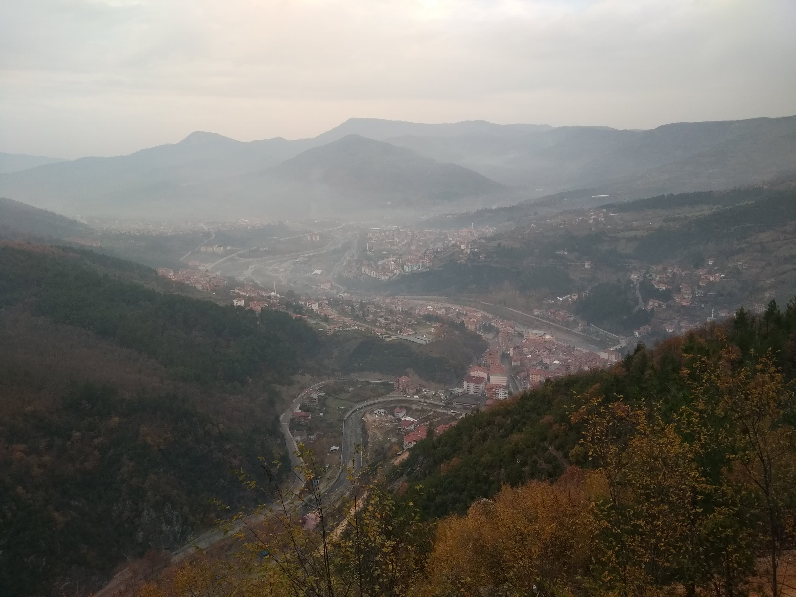

Yenice Ormanları, Karabük’ün Yenice ilçesinde yer alan ve Türkiye’nin en zengin doğal orman alanlarından biridir. Avrupa'nın biyolojik çeşitlilik açısından en değerli ormanları arasında gösterilen bu bölge, geniş yapraklı ağaç türleri, endemik bitkiler ve yaban hayatı açısından büyük önem taşır. Doğa yürüyüşleri, kuş gözlemi ve kampçılık gibi aktiviteler için ideal olan Yenice Ormanları, temiz havası ve eşsiz manzaralarıyla doğaseverlerin uğrak noktasıdır. Aynı zamanda “Doğa Eğitim ve Bilim Merkezi” gibi projelerle çevreci turizmi destekleyen bir bölgedir.
